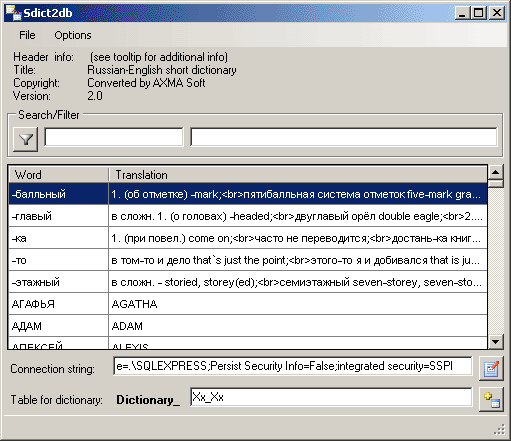
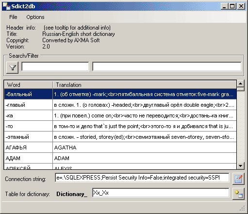

About
Sdict2db is parser for SDict-based format dictionaries with ability to save in a SQL server (with creating table, index and filling data) and in a text file (SDict text format).
The program supports english and russian interface languages.

Sdict2db is parser for SDict-based format dictionaries with ability to save in a SQL server (with creating table, index and filling data) and in a text file (SDict text format).
The program supports english and russian interface languages.
